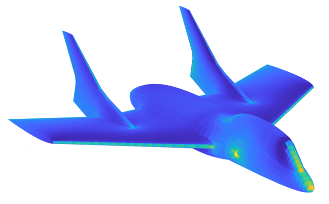
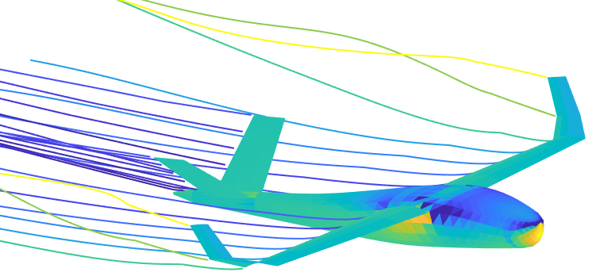

The flow solver in this toolset offers a robust selection of panel element types, providing users with the flexibility to
model aerodynamic flows with varying levels of fidelity. It includes constant and linear source panels, ideal for potential flow modeling and understanding basic aerodynamic interactions. Additionally, vortex line elements allow for efficient wake modeling and lift calculations, making them particularly useful for wing and lifting surface analysis. For more advanced simulations, the solver incorporates linear and quadratic doublet panels, enabling higher accuracy in representing complex surface curvature and flow interactions. This comprehensive range of panel methods ensures that both students and professionals can tailor their analyses to suit anything from introductory aerodynamic studies to high-fidelity aircraft design and optimization.